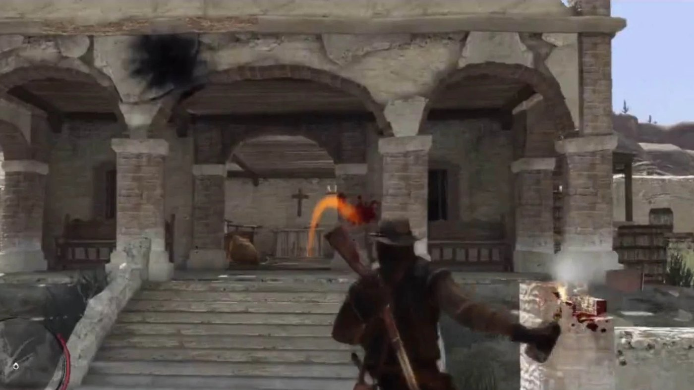
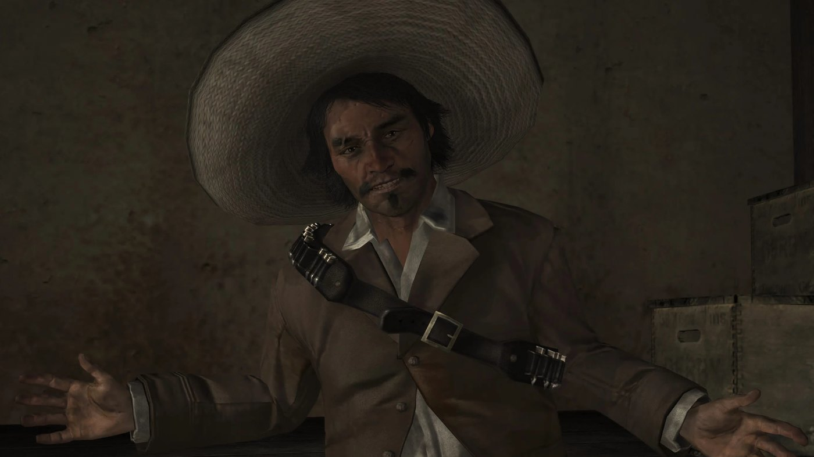

Bill Williamson escaped the assault on Fort Mercer in Act 1 and crossed into Mexico. John Marston follows him over the San Luis River into Nuevo Paraíso, a province in the middle of a civil war. The second act is built on a single decision: John works for both sides at once, because both sides claim they can hand him the men he came for.
Full spoilers for Act 2 of Red Dead Redemption follow.
Setting: Nuevo Paraíso
Nuevo Paraíso is the game's Mexican region, reached by crossing the San Luis River from New Austin. Chuparosa is its main town. Escalera, in the south, is the seat of the provincial government. El Presidio is a fortified army post, and Las Hermanas is a convent that shelters the poor. The province is under military rule and an armed rebellion is under way.
The two sides of the war
Colonel Agustin Allende governs the province for the Mexican government and lives at Escalera. His officer, Captain Vincente de Santa, handles most of the army's dealings with John. Against them stands a rebel movement led by Abraham Reyes, a well-spoken young revolutionary. Luisa Fortuna, a young teacher who fights with the rebels, believes in him completely. Allende promises to find Bill Williamson and Javier Escuella for John in exchange for his help against the rebels. Reyes later tells John that the two men paid Allende to hide them.

Working both sides
De Santa promises John that the army will deliver Bill and Javier, and sends him after rebels instead. In "Must a Savior Die?", John frees Reyes from a firing squad at El Presidio at Luisa's request. Reyes promises the same thing, and sends him to raid army convoys and free prisoners. John takes both sets of jobs and says openly that he does not care who wins. The act is a long sequence of errands that never quite produce the two men, until John stops waiting for either side to keep its word.
Landon Ricketts
Landon Ricketts is an aging American gunslinger living out his retirement in Chuparosa. John meets him when he first rides into Chuparosa. On the raft in Act 1, Irish vaguely recalls an American he once drank with there. Ricketts is the only figure in the region with no stake in the war: he protects the townspeople, teaches John how to shoot faster, and helps him during several missions.
De Santa's betrayal
In "Cowards Die Many Times", Allende tells John that Bill and Javier have been captured in Chuparosa; De Santa takes him there and has him seized for execution. Reyes and his rebels attack the town and save him. That break ends any pretense of working for the army, and John commits to the rebel side to reach Escalera. In "Captain De Santa's Downfall", De Santa dies at Sepulcro, shot by John or by the rebels (player's choice).

El Presidio and Escalera
In "The Gates of El Presidio", John and the rebels storm the army compound where Javier Escuella is hiding. John either kills Javier or captures him alive, a choice left to the player. The act ends in Escalera with "An Appointed Time": the army has captured Reyes, and Luisa Fortuna is shot dead trying to save him from execution. John frees Reyes, the rebels take Allende's villa, and Allende and Bill Williamson flee by stagecoach. Once the coach is stopped on the road, Allende offers Bill to John in exchange for his life; both men are shot by John or by Reyes (player's choice). Reyes holds the province and invites John to ride with him on the capital; John declines and rides back north with nothing left on his list but Dutch.
Key characters
Act 2 follows John Marston between two camps: Colonel Agustin Allende and Captain Vincente de Santa on the government side, Abraham Reyes and Luisa Fortuna on the rebel side. Landon Ricketts helps him without joining either. Javier Escuella and Bill Williamson are the targets.
Key events of Act 2
- John crosses the San Luis River into Nuevo Paraíso to find Bill Williamson and Javier Escuella.
- He works for Colonel Allende and Captain de Santa, and at the same time for Abraham Reyes and the rebels.
- Landon Ricketts, a retired gunslinger in Chuparosa, trains and assists him.
- De Santa betrays John in Chuparosa; Reyes's rebels save him from execution, and De Santa later dies at Sepulcro, killed by John or by the rebels (player's choice).
- The rebels attack El Presidio, and John kills or captures Javier Escuella (player's choice).
- In Escalera, Luisa Fortuna is killed trying to save Reyes; the rebels take Allende's villa, and Allende and Bill Williamson, fleeing by stagecoach, are shot on the road by John or by Reyes (player's choice).
- Reyes takes power in the province, and John returns north to hunt Dutch van der Linde in Act 3 (West Elizabeth).